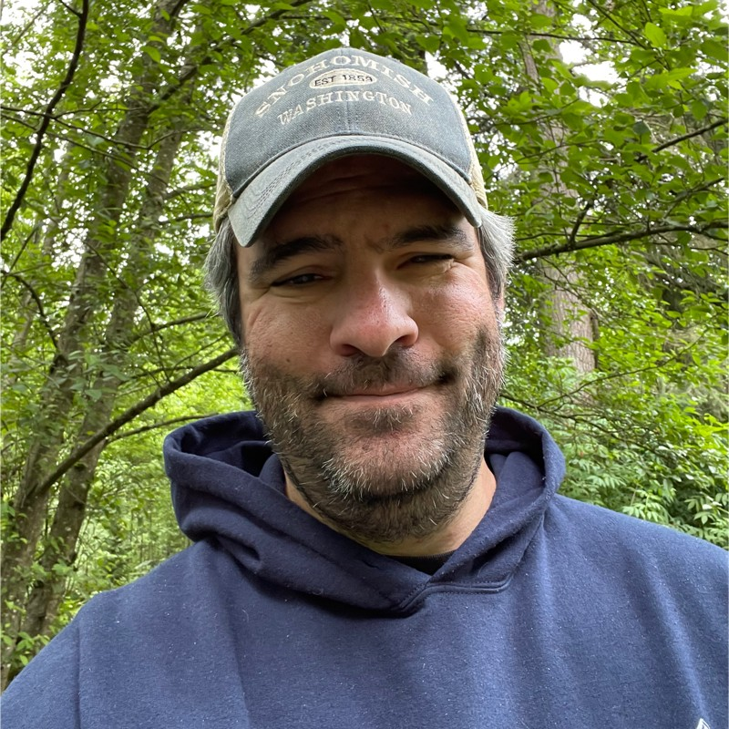
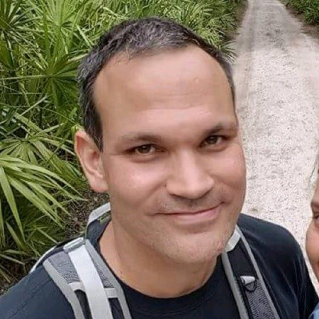

Emily is a gifted software engineer who blew me away from the first day I interviewed her to the last day we worked together. Emily was a backend engineer on our platform team for 2.5 years. She is exactly the type of person you hope to have on your team, she is extremely proactive in not only her work, but her communication and personal goals. It’s safe to say that Emily out-produced engineers senior to her. I can only hope to work with Emily in the future and enthusiastically recommend her as an asset to any company.
Scott Barrett
Emily is not just a gifted engineer; she's a standout professional whose contributions go far beyond the usual accolades of technical excellence and collaboration. In the two-plus years we worked together, I witnessed her exceptional abilities in the midst of some of the most challenging circumstances of my career.
During this period, we navigated the tail end of the pandemic, grappled with the effects of 'The Great Resignation,' undertook the complex task of migrating services from GCP to AWS, and adapted to constant organizational shifts. It's no exaggeration to say that we wouldn't have met our engineering objectives without Emily's invaluable presence.
Emily's role as a constant advocate for camaraderie, pair programming, and process improvements was pivotal. Her ability to represent the engineers' needs and collaborate with me to find effective solutions was truly remarkable. Emily had a keen sense of discerning which battles were worth fighting for the team and had the confidence to hold me accountable to follow through. She played a pivotal role in resolving issues, ranging from interpersonal conflicts within the team to advocating for the adoption of new tools, all the way up to confronting senior management regarding the importance of addressing technical debt and maintaining quality standards.
In short, Emily is a rare talent who not only excels in her technical role but also possesses the leadership, advocacy, and resilience that make her a driving force behind team success. Her ability to navigate complex challenges and advocate for the team's best interests is unparalleled. Working with Emily has been a privilege, and I have no doubt that she will continue to excel in any role she takes on.
Stephen Pope
I have worked together with Emily on the Platform Engineering team at Descartes Labs for the last two and a half years. She was hired into an entry level position after receiving her undergraduate degree and became an integral part of the team, having worked on many different subsystems and services making up the backend of the Descartes Labs Platform. She has contributed to maintenance and enhancements of existing services as well as taking part in the design, implementation, and deployment of new services. Her responsibilities also included testing and documentation as well as the monitoring and troubleshooting of production service deployments.
Emily is a hard worker and an enthusiastic and productive collaborator. She works well in small teams of engineers focused on developing and delivering a service or feature. She is adept at learning new systems, skills, and languages through immersion, and seeks out her coworkers to help broaden her knowledge. I can recommend her without reservation for employment as a software engineer.

Mat Savage
I worked with Emily on Descartes Labs’ platform engineering team. She spent a considerable amount of time helping me onboard to the company when I joined earlier this year, and quickly became a reliable source of institutional knowledge when all other avenues were exhausted. Her work on a new compute solution in AWS in service of our work to transition away from Google Cloud was invaluable. The energy and knowledge Emily brings to the projects that she works on make her an incredible asset to any team.

Phil Nugent
I had the privilege of working closely with Emily at Descartes Labs. In my time working with Emily I was continually impressed with her dedication and commitment to the goals at hand and the technical proficiency she employed to achieve them. We worked on a number of feature MVPs together and I was continually impressed with Emily's attention to detail and eagerness to deliver an excellent product. Her communication and collaboration skills are unparalleled in my experience and contributed to a very smooth remote working environment. I cannot speak highly enough about my experience working with Emily. She is a very talented software engineer and any organization would be lucky to have her on their team.
Meghna Gupta
Emily and I have worked on various school projects together. Emily is a great team player, she works hard to ensure the team's success. She is easy to work with, works with great authenticity and brings her unique ideas to the table. She would be a great asset to any team.
Thomas Krause
I had the pleasure of working with Emily for close to two years at Descartes Labs on the platform team. In that time, she took on numerous challenges on our Python client as well as our backend services. For context, these services process data at petabyte scale in the geospatial and data analytics domain.
Emily implemented a clever abstraction layer for our Delayed Job processing system using threading and async code allowing it to process jobs in mass from AWS SQS. She designed and implemented the bulk of our Batch Compute service client based on AWS to include code bundling and provided a user friendly interface for customers using the service.
Emily is a very strong communicator and collaborator and would be a great fit for any team. I would be happy to work with her again if given the opportunity.
Robert Voyer
I worked with Emily for just shy of a year at Descartes Labs and in that time, I saw her grow from a junior engineer into an indispensable contributor on a small team managing a lot of software. Whether it was extending a backend microservice in Golang, or building out an entirely new portion of our platform's Python client, Emily demonstrated herself to be a quick study, often despite ambiguous and shifting requirements. In addition to being a reliable contributor, Emily was patient, unflappable, and persistent. She was willing to pick up whatever work was needed to bring the team's committments to the finish line, always taking feedback to heart, and with each pull request, delivering increasingly high quality software. Given the opportunity, I would gladly work with Emily again.
Jay Carlson
Emily was an engineer on the product development team for the Descartes Labs Platform, and I worked with her in my capacity as PM. For context, this is an extremely complex domain (geospatial data science tools) and the product routinely handles large-scale, bursty workloads (petabytes of data, zero to thousands of workers within minutes). Emily established herself quickly as an integral Cartesian both as an IC and as an advocate for her team. While she overhauled one of our most critical and highly scrutinized APIs to much praise from customers, Emily was publicly and privately advocating for her teammates and for leadership transparency. Emily is a true joy to work with and her leadership will have an outsize impact in any org.
Laura Sturch
Emily is a gifted software engineer who blew me away from the first day I interviewed her to the last day we worked together. Emily was a backend engineer on our platform team for 2.5 years. She is exactly the type of person you hope to have on your team, she is extremely proactive in not only her work, but her communication and personal goals. It’s safe to say that Emily out-produced engineers senior to her. I can only hope to work with Emily in the future and enthusiastically recommend her as an asset to any company.
Scott Barrett
Emily is not just a gifted engineer; she's a standout professional whose contributions go far beyond the usual accolades of technical excellence and collaboration. In the two-plus years we worked together, I witnessed her exceptional abilities in the midst of some of the most challenging circumstances of my career. During this period, we navigated the tail end of the pandemic, grappled with the effects of 'The Great Resignation,' undertook the complex task of migrating services from GCP to AWS, and adapted to constant organizational shifts. It's no exaggeration to say that we wouldn't have met our engineering objectives without Emily's invaluable presence. Emily's role as a constant advocate for camaraderie, pair programming, and process improvements was pivotal. Her ability to represent the engineers' needs and collaborate with me to find effective solutions was truly remarkable. Emily had a keen sense of discerning which battles were worth fighting for the team and had the confidence to hold me accountable to follow through. She played a pivotal role in resolving issues, ranging from interpersonal conflicts within the team to advocating for the adoption of new tools, all the way up to confronting senior management regarding the importance of addressing technical debt and maintaining quality standards. In short, Emily is a rare talent who not only excels in her technical role but also possesses the leadership, advocacy, and resilience that make her a driving force behind team success. Her ability to navigate complex challenges and advocate for the team's best interests is unparalleled. Working with Emily has been a privilege, and I have no doubt that she will continue to excel in any role she takes on.
Stephen Pope
I have worked together with Emily on the Platform Engineering team at Descartes Labs for the last two and a half years. She was hired into an entry level position after receiving her undergraduate degree and became an integral part of the team, having worked on many different subsystems and services making up the backend of the Descartes Labs Platform. She has contributed to maintenance and enhancements of existing services as well as taking part in the design, implementation, and deployment of new services. Her responsibilities also included testing and documentation as well as the monitoring and troubleshooting of production service deployments. Emily is a hard worker and an enthusiastic and productive collaborator. She works well in small teams of engineers focused on developing and delivering a service or feature. She is adept at learning new systems, skills, and languages through immersion, and seeks out her coworkers to help broaden her knowledge. I can recommend her without reservation for employment as a software engineer.
Mat Savage
I worked with Emily on Descartes Labs’ platform engineering team. She spent a considerable amount of time helping me onboard to the company when I joined earlier this year, and quickly became a reliable source of institutional knowledge when all other avenues were exhausted. Her work on a new compute solution in AWS in service of our work to transition away from Google Cloud was invaluable. The energy and knowledge Emily brings to the projects that she works on make her an incredible asset to any team.
Phil Nugent
I had the privilege of working closely with Emily at Descartes Labs. In my time working with Emily I was continually impressed with her dedication and commitment to the goals at hand and the technical proficiency she employed to achieve them. We worked on a number of feature MVPs together and I was continually impressed with Emily's attention to detail and eagerness to deliver an excellent product. Her communication and collaboration skills are unparalleled in my experience and contributed to a very smooth remote working environment. I cannot speak highly enough about my experience working with Emily. She is a very talented software engineer and any organization would be lucky to have her on their team.
Meghna Gupta
Emily and I have worked on various school projects together. Emily is a great team player, she works hard to ensure the team's success. She is easy to work with, works with great authenticity and brings her unique ideas to the table. She would be a great asset to any team.
Thomas Krause
I had the pleasure of working with Emily for close to two years at Descartes Labs on the platform team. In that time, she took on numerous challenges on our Python client as well as our backend services. For context, these services process data at petabyte scale in the geospatial and data analytics domain. Emily implemented a clever abstraction layer for our Delayed Job processing system using threading and async code allowing it to process jobs in mass from AWS SQS. She designed and implemented the bulk of our Batch Compute service client based on AWS to include code bundling and provided a user friendly interface for customers using the service. Emily is a very strong communicator and collaborator and would be a great fit for any team. I would be happy to work with her again if given the opportunity.
Robert Voyer
I worked with Emily for just shy of a year at Descartes Labs and in that time, I saw her grow from a junior engineer into an indispensable contributor on a small team managing a lot of software. Whether it was extending a backend microservice in Golang, or building out an entirely new portion of our platform's Python client, Emily demonstrated herself to be a quick study, often despite ambiguous and shifting requirements. In addition to being a reliable contributor, Emily was patient, unflappable, and persistent. She was willing to pick up whatever work was needed to bring the team's committments to the finish line, always taking feedback to heart, and with each pull request, delivering increasingly high quality software. Given the opportunity, I would gladly work with Emily again.
Jay Carlson
Emily was an engineer on the product development team for the Descartes Labs Platform, and I worked with her in my capacity as PM. For context, this is an extremely complex domain (geospatial data science tools) and the product routinely handles large-scale, bursty workloads (petabytes of data, zero to thousands of workers within minutes). Emily established herself quickly as an integral Cartesian both as an IC and as an advocate for her team. While she overhauled one of our most critical and highly scrutinized APIs to much praise from customers, Emily was publicly and privately advocating for her teammates and for leadership transparency. Emily is a true joy to work with and her leadership will have an outsize impact in any org.